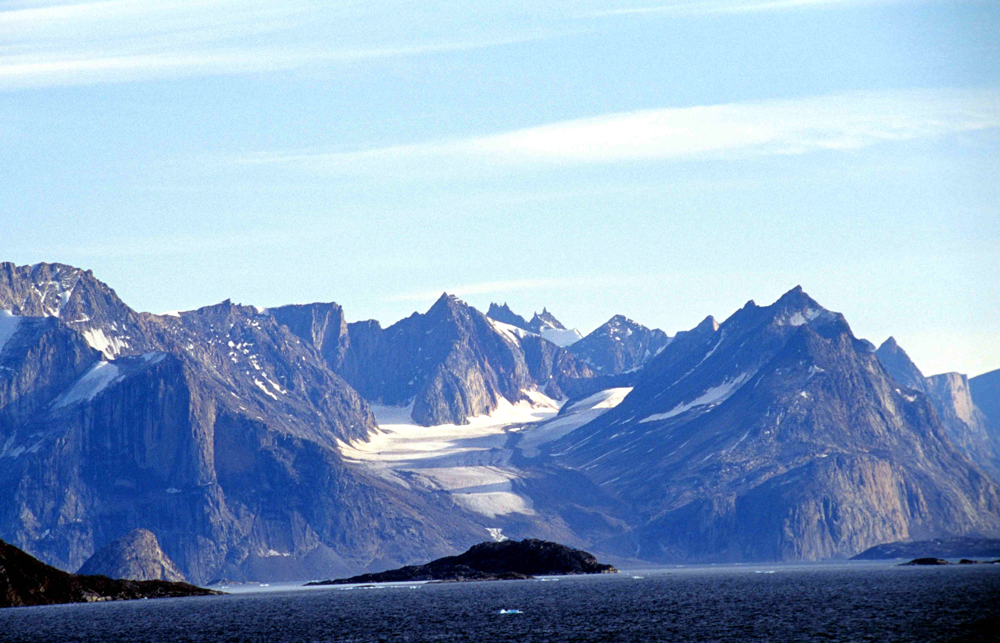

Well above the Arctic Circle, there are mountain ranges with peaks taller than any in the Eastern United States. Isn't this something to behold, that on this Earth, in the furthest reaches of forever winter where the sun is always shining or never there, there are massive mountains that have been inhabited (or were never found) by human beings for thousands of years? There is something striking about this, the existence of such peaks that few have seen and even fewer have climbed—these mythical lands are real. These pages will cover three of the prominent mountain ranges of the far north, the Arctic Cordillera, the Brooks Range, and the Watkins Range. These mountain ranges were formed during different geologic periods, have largely unique ecologies based on their proximity to ocean currents and prevailing meteorological patterns, and have intriguing histories of human exploration and settlement.
 My criteria for picking these mountain ranges| peak name | range name | elevation | prominence |
|---|---|---|---|
| Gunnbjørn Fjeld | Watkins Range | 12,119 feet (3,694 meters) | 12,119 feet (3,694 meters) |
| Mount Isto | Brooks Range | 8,976 feet (2,736 meters) | 7,876 feet (2,401 meters) |
| Barbeau Peak | British Empire Range (parent range Arctic Cordillera) | 8,583 feet (2,616 meters) | 8,583 feet (2,616 meters) |
I selected this topic because mountains have been a forever fascination of mine. Mountains exist in limbo for so many human cultures, they are equal parts lands of leisure and places to be feared. Every religion (at least the ones I can think of) has some prominent mountain story, which might point to why I've always held such reverence for the mountains I've climbed—the mountain bridges the gap between life and death, the world of gods and ghosts meeting plants, animals, and human beings, all of whom must adapt themselves to survive in a place where they're not supposed to be. The mountains of the Arctic are largely completely uninhabitable—they certainly, in my opinion, do not belong to settlers who wish to strip away minerals from ecosystems already under extreme duress from climate change. The there links below will take you to pages about each of the aforementioned ranges. If there's anything I want to get across in this project, it's that there's so much magic in the mountains on Earth, and it's our job to keep it that way.